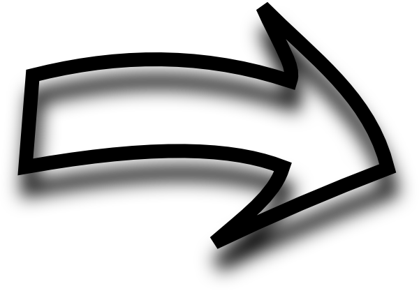

→ În primul rând, acesta este meniul. Poţi apăsa pe o celulă pentru a fi direcţionat către pagina respectivă.
→ Trebuie să ştii că sunt ascunse unele imagini, precum cele din spatele celor două texte, din rubrica "Chimie". Apăsând pe textele scrise cu font roşu va apărea o imagine reprezentativă.
→ O altă informaţie utilă ar fi aceea că după butoanele roşii se ascunde o surpriză.

|
 |